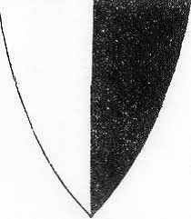

Antavla
1538337862 Count Folmar V von Metz & Hombourg
Greve.

Far:
Folmar IV of Metz (- 1111)
Död:
1145.
[1]
Barn med
1538337863 Mechtild of Dagsburg (- >1157)
Barn:
Agnes von Metz (1114? - >1175)
Personhistoria
Årtal
Ålder
Händelse
1111
Fadern
3076675724 Count Folmar IV of Metz
dör 1111
[1]
1114?
Dottern
769168931 Agnes von Metz
föds omkring 1114
[2]
1145
Död 1145
[1]
Källor
[1]
Wikipedia
[2]
Familypedia